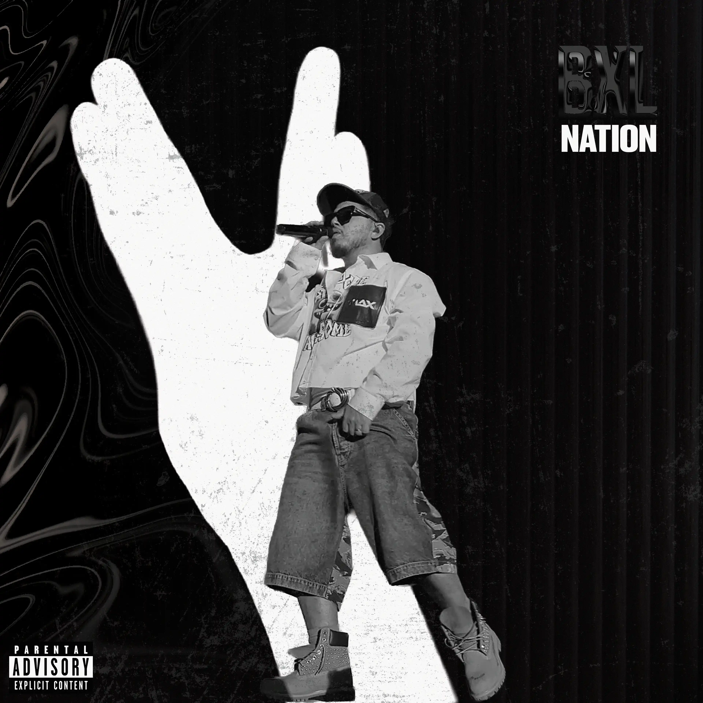
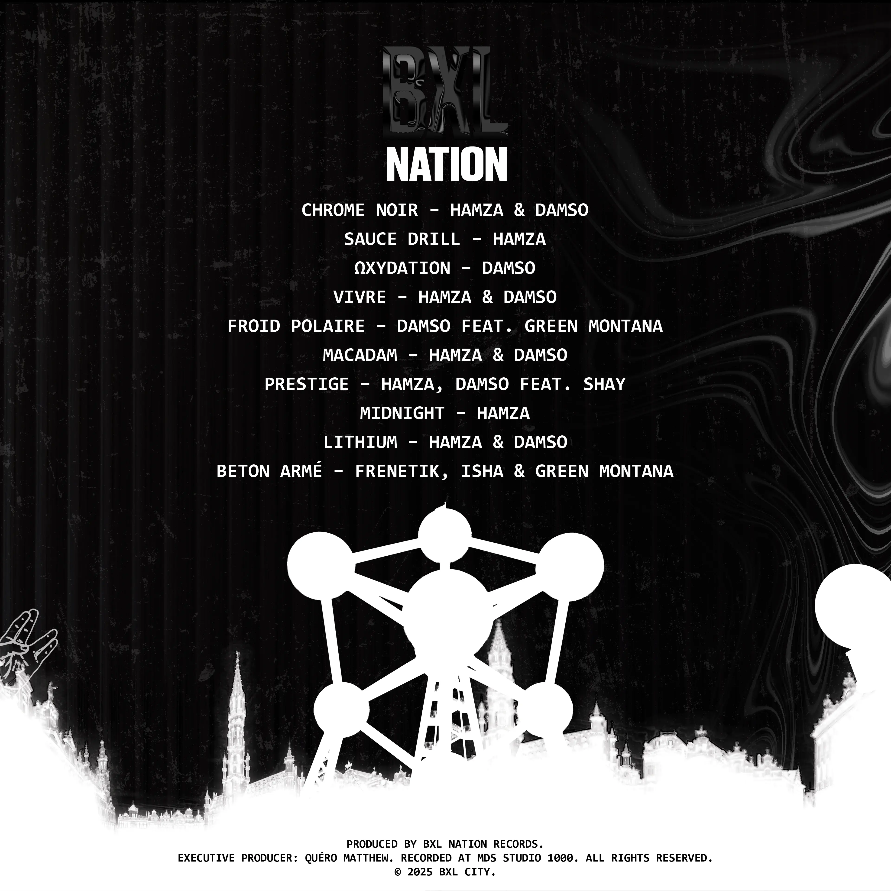
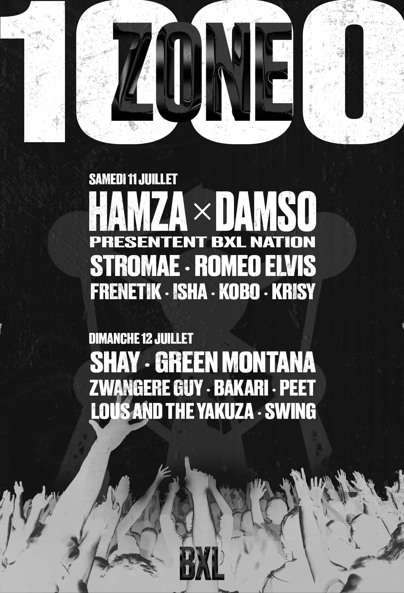
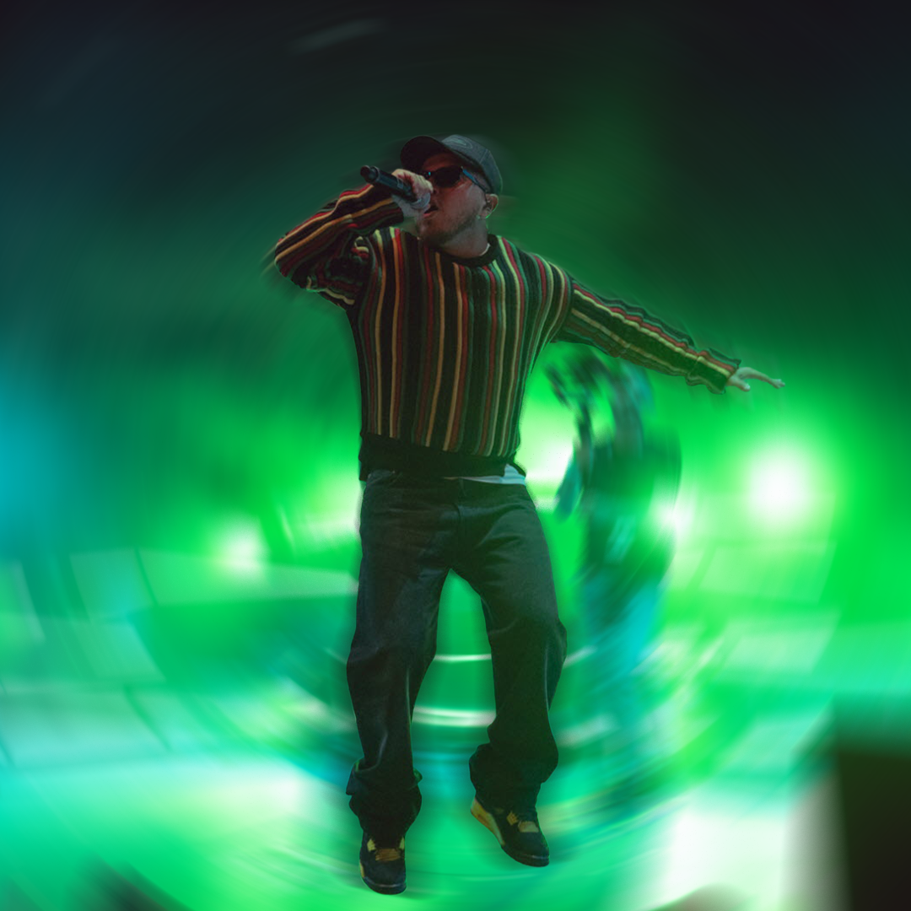

Le Brief : Répondre à un appel d'offre pour la refonte complète de l'image de marque d'une ville. Le défi était de placer son style musical au cœur de sa nouvelle identité pour la moderniser et attirer une cible jeune[cite: 9, 10, 19].
La Réponse : J'ai choisi Bruxelles (BXL) pour sa scène vibrante. Le projet "BXL NATION" décline cet ADN musical en une identité globale : création du logo [cite: 24], design d'une pochette vinyle compilation [cite: 26], stratégie réseaux sociaux [cite: 32] et campagne d'affichage pour un festival urbain[cite: 35].